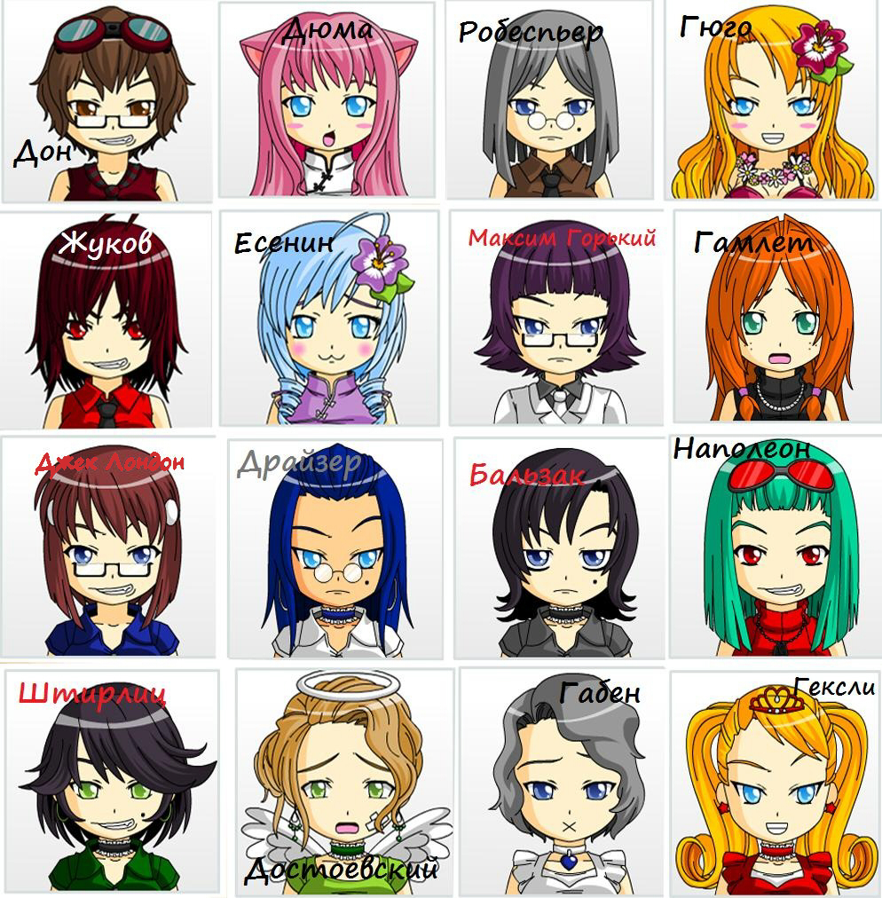

Тимы и их описания

Логико-интуитивный экстраверт - "Джек Лондон"
Логико-сенсорный экстраверт - "Штирлиц"
Этико-интуитивный экстраверт - "Гамлет"
Этико-сенсорный экстраверт - "Гюго"
Логико-интуитивный интроверт - "Робеспьер"
Логико-сенсорный интроверт - "Максим Горький"
Этико-интуитивный интроверт - "Достоевский"
Этико-сенсорный интроверт - "Драйзер"
Интуитивно-логический экстраверт - "Дон Кихот"
Сенсорно-логический экстраверт - "Жуков"
Интуитивно-этический экстраверт - "Гексли"
Сенсорно-этический экстраверт - "Наполеон"
Интуитивно-логический интроверт - "Бальзак"
Сенсорно-логический интроверт - "Габен"
Интуитивно-этический интроверт - "Есенин"
Сенсорно-этический интроверт - "Дюма"